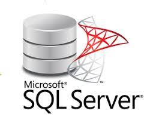

| MariaDB |
Es un sistema de gestión de bases de datos que está muy relacionado con MySQL, ya que fue desarrollado por uno de los desarrolladores, Michael “Monty” Widenius. |
- Mejoras en la velocidad
- Extenciones
- Errores y alertas
- Documentacion y ayuda
- Licencia GPl
|
|
| MySQL |
Es un sistema de administración y gestión de las bases de datos es considerado la principal base datos open source del mundo y es muy popular para desarrollos de aplicaciones específicas y desarrollo web. |
- Arquitectura Cliente y Servidor
- Compatibilidad con SQL
- Procedimientos almacenados
- Desencadenantes
- Transacciones
|
|
| PostgreSQL |
| Es un sistema para gestionar bases de datos de muy alto nivel, completamente de software libre y con una licencia BSD, compatible con cualquier uso, ya sea personal o comercial |
- El lenguaje SQL que usa es muy próximo al estándar ISO/IEC
- Permite crear esquemas, tablas heredadas y triggers orientados a eventos que no poseen otros motores.
- También provee una excelente escalabilidad vertical.
|
|
| Oracle |
Es una herramienta para la gestión de bases de datos, usada principalmente por las grandes empresas para que estas puedan controlar y gestionar una gran cantidad de contenidos desde un solo archivo |
- Herramienta de administración gráfica intuitiva y cómoda de utilizar.
- Control de acceso: tecnologías avanzadas para vigilar la entrada a los datos
- Protección de datos
- Alta disponibilidad
|
|
| SQL Server |
Es un sistema de gestión de base de datos relacional, desarrollado por la empresa Microsoft.
El lenguaje de desarrollo utilizado (por línea de comandos o mediante la interfaz gráfica de Management Studio) es Transact-SQL (TSQL) |
- Soporte de transacciones
- Escalabilidad, estabilidad y seguridad
- Soporta procedimientos almacenados
- Permite trabajar en modo cliente-servidor
|

|